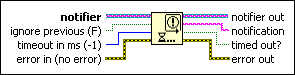

Wait on Notification with Notifier History Function
Owning Palette: Advanced Notifier Waiting Functions
Requires: Base Development System
Waits until a notifier receives a message. This function tracks the most recent message and timestamp for each individual notifier when you use this function repeatedly with different notifiers.

 Add to the block diagram Add to the block diagram |
 Find on the palette Find on the palette |